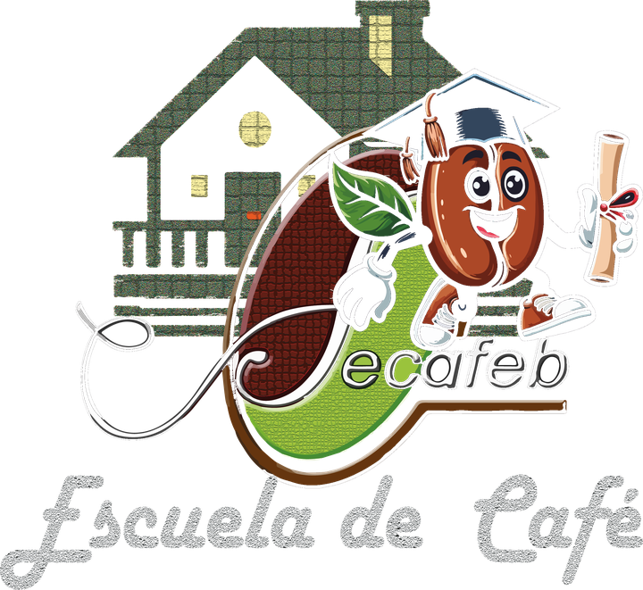

Asistencia técnica productiva
Acompañamiento en campo para mejorar rendimientos, calidad de taza y manejo agroforestal sostenible.
Federación de Caficultores Exportadores de Bolivia: 17.500 familias productoras, 42 organizaciones y trazabilidad geoespacial conforme al Reglamento UE 2023/1115 (EUDR).
Desde 1991, FECAFEB representa, articula y fortalece a las organizaciones de productores de café de Bolivia, impulsando un sector competitivo, sostenible y con identidad.
Impulsar el desarrollo del productor cafetalero de Bolivia, sus familias y sus organizaciones, mediante una gestión innovadora, eficiente, humana y democrática de FECAFEB.
Café de Bolivia reconocido nacional e internacionalmente, posicionando el café orgánico y de especialidad, protegiendo el clima y el medio ambiente e impulsando el consumo masivo de calidad.
Fundación de FECAFEB con 10 organizaciones de productores como ente rector del sector cafetalero.
Consolidación como gestora de proyectos de desarrollo, asistencia técnica y los Torneos de Café de Excelencia.
Plan Estratégico Institucional 2023–2027: sostenibilidad financiera, calidad y denominación de origen.
Transformación digital y trazabilidad EUDR para el acceso preferente al mercado europeo.
Una plataforma integral de servicios que acompaña al productor desde la parcela hasta el contrato de exportación.
Acompañamiento en campo para mejorar rendimientos, calidad de taza y manejo agroforestal sostenible.
Vinculación con compradores internacionales, café de stock y promoción de la denominación de origen boliviana.
Manejo integrado de plagas, bioinsumos y transferencia tecnológica para una caficultura resiliente al clima.

Formación integral para productores, jóvenes y mujeres cafetaleras: del cultivo a la taza, con enfoque en calidad, catación y gestión.
Dos caminos según su perfil: organizaciones de productores que desean afiliarse y compradores internacionales que buscan un proveedor latino confiable.
Acceda a representación sectorial, asistencia técnica, capacitación y vinculación comercial.
Conéctese con café verde oro trazable, con declaración de diligencia debida (DDS) lista para la UE.
Cumplimos el Reglamento UE 2023/1115 sobre productos libres de deforestación. Cada lote es geolocalizado y verificable.
Polígonos de cada parcela en GeoJSON / WGS84, georreferenciados en campo.
Productor, finca, fecha de cosecha y cadena de custodia en la plataforma institucional.
Generación de la Declaración (DDS) y verificación contra mapas de deforestación.
Presentación ante el sistema de la UE para el ingreso conforme del café.
Acceso preferente al mercado europeo. Nuestra plataforma deja lista la documentación de diligencia debida, reduciendo riesgos y tiempos para el importador.
Nueva plataforma digital para sistematizar datos de productores y parcelas.
Leer más →Productores de los Yungas destacan por su café de especialidad.
Leer más →Jóvenes y mujeres lideran la mejora de la calidad en sus cooperativas.
Leer más →Reemplace estos espacios por fotografías reales de cafetales, cosecha, beneficiado y comunidades.
Compradores, cooperativas y aliados: escríbanos y le responderemos a la brevedad.